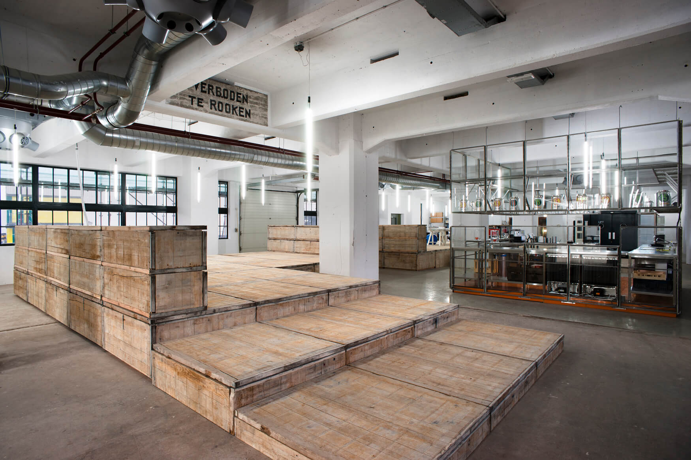
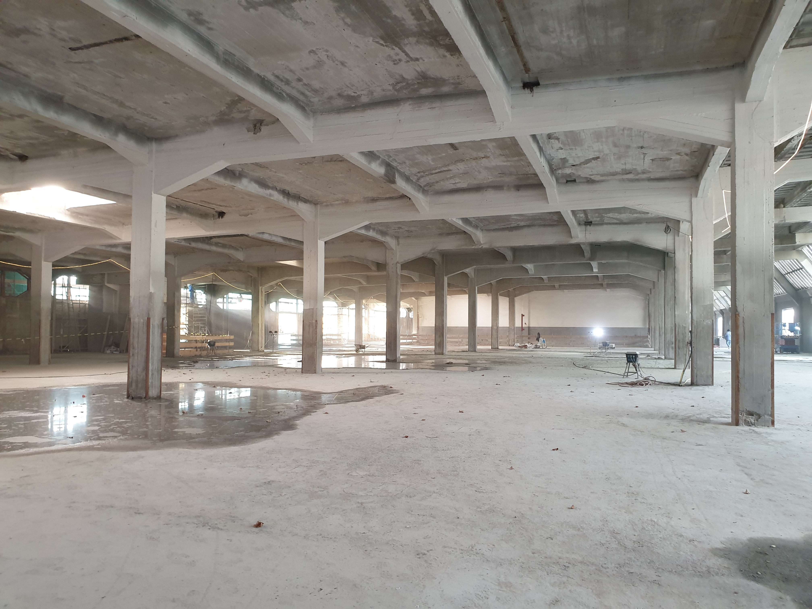
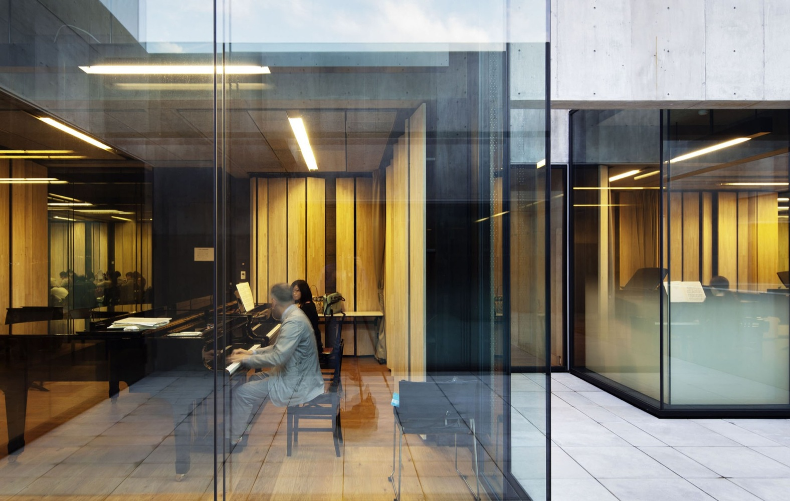
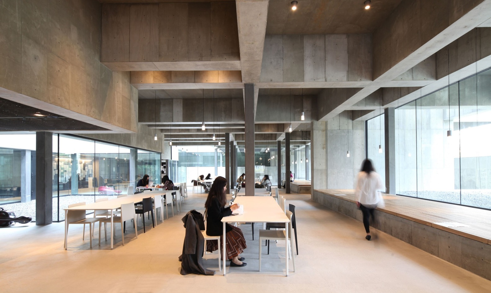
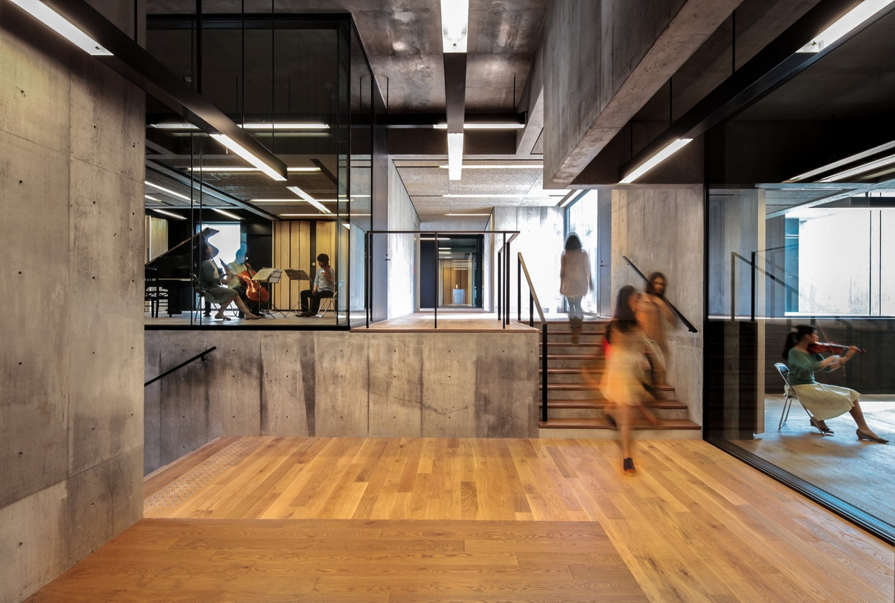
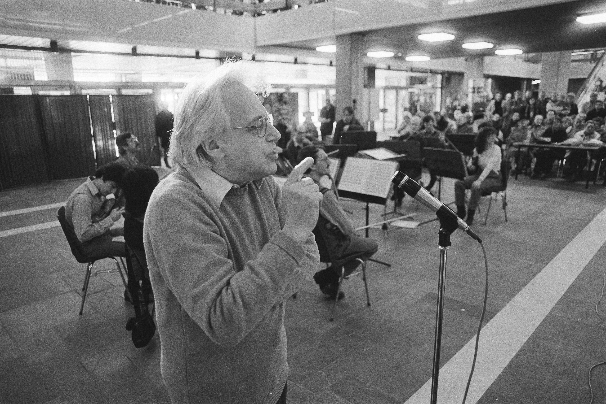
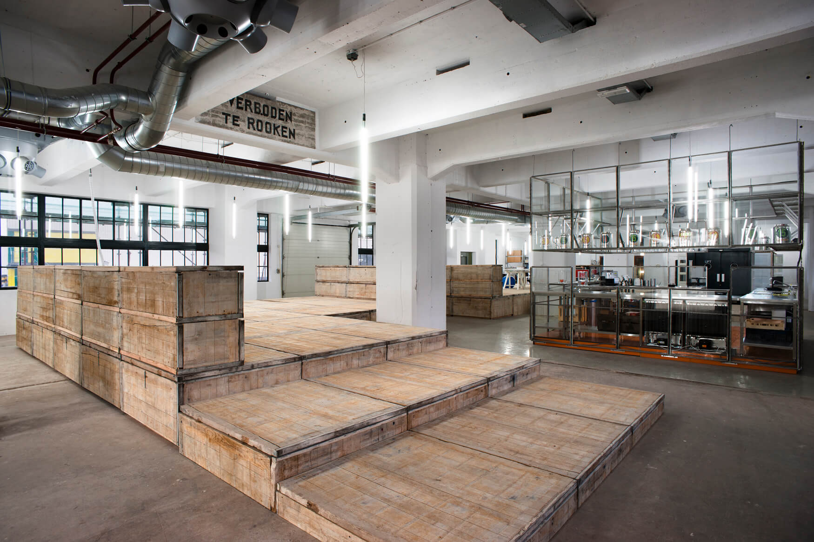
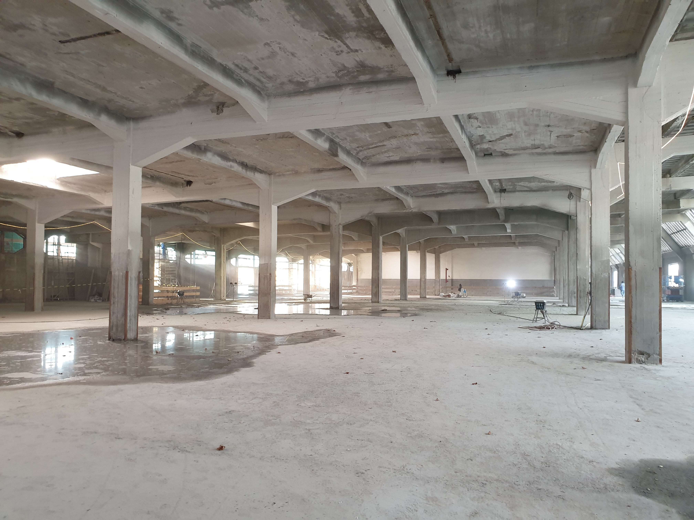
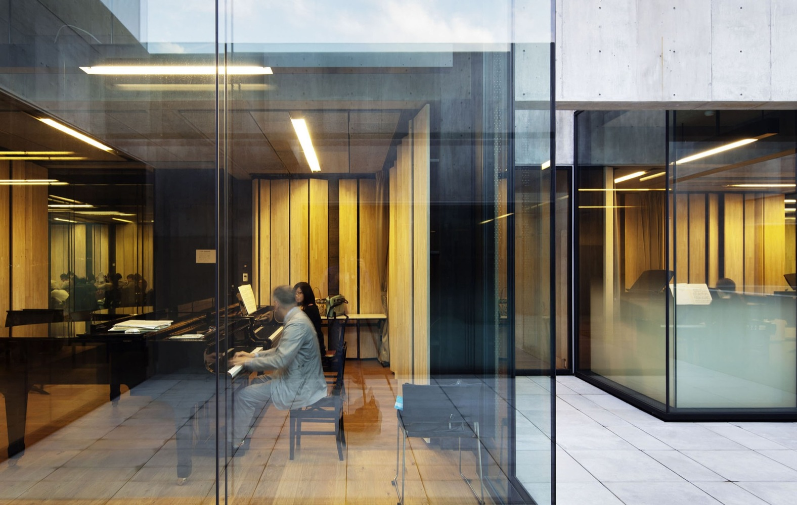
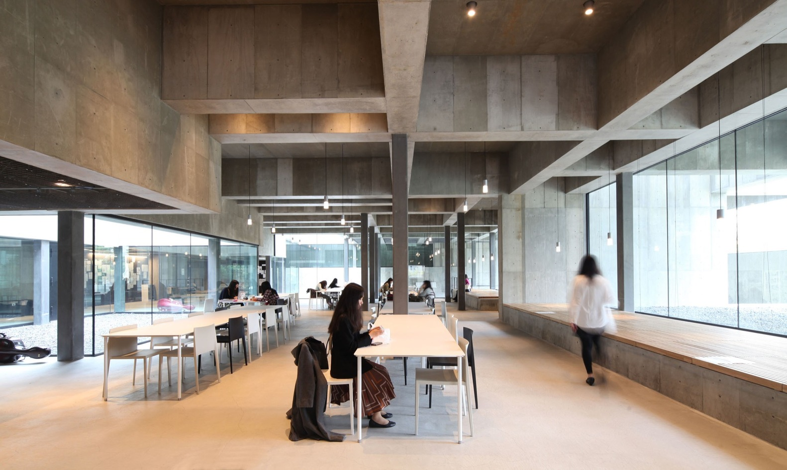
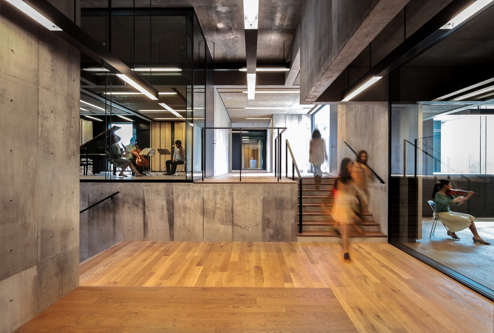
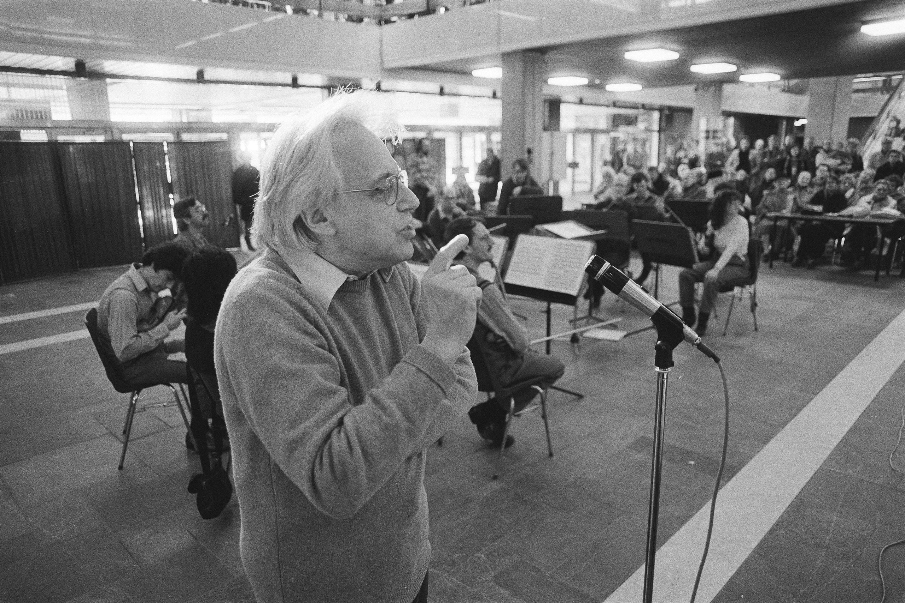
through the years, classical music has been associated with higher social classes and exclusiveness. unwritten rules and restrictions have been created around it, making the music experience secondary and difficult.
there is no need for audiences to sit still with fear; of not understanding the piece, making a sound, and seeming disrespectful by not giving a standing ovation. however, when rules like these are unreasonably implied, a barrier between the music and the audience is formed.
by recognising current cultural patterns and the psychological impact of a live music performance, simple and sensible solutions can be found.
in 2021, it can be possible for anyone to access the world of the classical tradition and participate in its continuation, without belonging to any privileged group.
the classical music scene yearns for a change; audiences, composers, performers and, generally, participants who do not see themselves in the large concert hall setting, crave another, simpler, modest and sincere environment to connect with the music and the community around it.
classical music is best experienced by being close to the -acoustic- instruments. undercurrent is a stage where the audience and the music are not separated from each other. by programming local musicians, students of conservatories, as well as professional performers and by prioritising sustainability over profit making, we promote an inclusive way of participating in classical music.
music education can be painless and engaging. our approach is rooted in centering the student's desire to learn, being efficient by respecting human psychology and being effective by following a proven systematic curriculum. the collaboration between the music school and podium provides an opportunity for students to gradually be introduced to real performing environments as well as having cool experiences full of fun and meaning.
a place where you can spend hours, work or study, have a piece of mind, see friends, connect with classical music and have a drink. the café is intended to support the other two streams by providing an inviting space and quality, seasonal, local food and drinks.
musician, pianist
classical piano teacher
music theory teacher
diversity, inclusion & equity ambassador
solutions engineer
team leader
architecht, designer
design lecturer
team leader